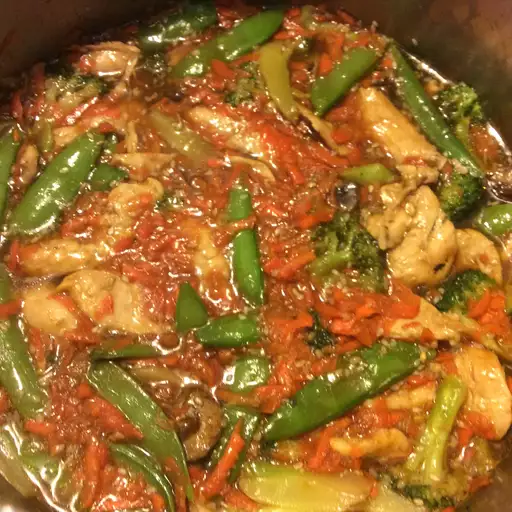

Garlic Chicke Stir Fry

Description
A stir fry recipe I developed to satisfy a family of garlic lovers.
Ingredients
- 2 tablespoons peanut oil
- 6 cloves garlic, minced
- 1 teaspoon grated fresh ginger
- 1 bunch green onions, chopped
- 1 teaspoon salt
- 1 pound boneless skinless chicken breasts, cut into strips
- 2 onions, thinly sliced
- 1 cup sliced cabbage
- 1 red bell pepper, thinly sliced
- 2 cups sugar snap peas
- 1 cup chicken broth
- 2 tablespoons soy sauce
- 2 tablespoons white sugar
- 2 tablespoons cornstarch
Steps
- Heat peanut oil in a wok or large skillet. When oil begins to smoke, quickly stir in 2 cloves minced garlic, ginger root, green onions and salt. Stir fry until onion becomes translucent, about 2 minutes. Add chicken and stir until opaque, about 3 minutes. Add remaining 4 cloves minced garlic and stir. Add sweet onions, cabbage, bell pepper, peas and 1/2 cup of the broth/water and cover.
- In a small bowl, mix the remaining 1/2 cup broth/water, soy sauce, sugar and cornstarch. Add sauce mixture to wok/skillet and stir until chicken and vegetables are coated with the thickened sauce. Serve immediately, over hot rice if desired.